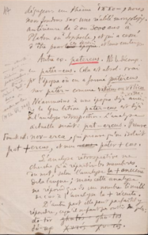
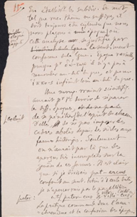

Edizione Interpretativa
Nell'edizione interpretativa vengono
eliminate le cancellature
e in generale tutti gli
interventi editoriali dell'autore.
Vengono inoltre sciolte tutte le
abbreviazioni.
Legenda:
Elemento Terminologico: Rosso
Esempio linguistico latino: Giallo
Esempio linguistico greco: Verde
Data:Rosa
Nome proprio:Azzurro
Pagina 14

Testo in francese
dégageons un thème
ἵππο-
, nous
nous fondons sur une réalité morphologique
antérieure de
deux
ou
trois mille ans à
Platon ou
Sophocle, et qui a cessé
d'être pour
epoque
ces écrivains et leurs contemporains.
Autre
ex.
exemple
patercus
Ns
Nous
le
decomp.
decomposons en
patěr-cus
Cela est
absol.
absolument vrai
pour l'époque où on a formé
patěrcus
sur
patěr-
comme
villi/cus
ou
vīlicus
sur
villa
.
Néanmoins, à une époque déjà ancienne
dela langue latine,
pater-cus
est dejà
del'analyse rétrospective. L'analyse
actuelle serait :
pat-ercus
. Preuve
formatformation nouvelle,
nov-erca
, qui prouve qu'on isolait
pat +
ercus
,
et non cus
pater + cus
.
L'analyse rétrospective ne
cherche qu'à répartir les membres
du mot, selon l'
analyse
la plus ancienne
de la langue ; mais cette analyse
ne répond que
dans
dansun nombre limité
de cas à l'analyse la plus récente.
D'autre part, elle peut parfaitement y
répondre; ce qu'il ne faut pas oublier non plsplus:
dō-tōr
ghutós = ghu-tos
δώ-τωρ
Χυτός = Χυ τός
Testo in italiano
Quando isoliamo un tema ἵππο-, noi
ci fondiamo su una realtà morfologica
anteriore di 2000 o 3000 anni a
Platone e Sofocle, e che ha cessato
d’essere per quegli scrittori e per i loro contemporanei.
Altro esempio: patercus. Lo scomponiamo
in pater-cus. Ciò è assolutamente vero
per l’epoca in cui hanno formato patercus
su pater, come villicus o vīlicus su villa.
Nondimeno, a un’epoca già antica
della lingua latina, pater-cus è già
analisi retrospettiva. L’analisi
contemporanea sarebbe:pat-ercus. Prova:
nuova formazione: nov-erca, che dimostra che si isolava
pat + ercus, e non pater + cus.
L’analisi retrospettiva non
tende che a suddividere i membri
della parola secondo l’analisi più antica
della lingua; ma quest’analisi
non risponde all’analisi più recente
se non in un numero limitato di casi.
D’altra parte, può perfettamente rispondervi,
e anche questo non dobbiamo dimenticarlo:
dō-tōr δώ-τωρ
Pagina 15

Testo in francese
En établissant les
subdiv.
subdivisionsdu mot,
teltelles
rac.racine,
thème ou suffixe, il
doit toujours être entendu que nous
nous plaçons à
une l'époque,
qu'elle éloignée ou rapprochée
, où
cette
analyse
an
se justifie par
l'intimitable ligne
le sentiment
conforme de la langue. Époque variable,
puisque pour
δώ-τωρ
il n'y a pas à
remonter au-delà du grec, et
pr
pour
ἵππο-ς
infiniment loin au-delà du grec.
Une
morp.
morphologie
vraiment scientifique
aurait
pr
pour
premier
devoir de séparer
les
diff.
différentes époques
et de ne pas
et de se pénétrer
exclusivement de l'esprit de chacune
d'elles, et de ne pas imposer des
cadres abolis depuis des siècles aux
formes historiques. Seulement
on n'aurait par là que des
aperçus très incomplets sur la
genèse de ces formes. Il est clair
que si je divisais
pat-ercus
conformément au
sent.
sentiment latin d'
unecertaine date,
je n'apercevrais pas le parallélisme
entre
pater
,
pater-cus
et
villa
,
villi-cus
(villă-cus)
.
La pratique commande donc l'ana-
chronisme et la confusion des époques.
Testo in italiano
Nello stabilire le suddivisioni della parola,
come radice, tema o suffisso
sempre deve restare inteso che noi
ci poniamo all’epoca, lontana o
ravvicinata, in cui tale analisi si giustifica per
il sentimento conforme della lingua. Epoca variabile,
perché per δώ-τωρ non dobbiamo risalire prima del
greco, e per
ἵππο-ςinfinitamente lontano prima del greco.
Una morfologia davvero scientifica
avrebbe per primo dovere di separare
le diverse epoche e
di penetrarsi esclusivamente dello spirito di ognuna
di esse, di non imporre alle
forme storiche un quadro abolito da secoli. Soltanto,
in questo modo non si avrebbe che
un’idea molto incompleta sulla
genesi di quelle forme. È chiaro
che se io dividessi pat-ercus,
conformemente al sentimento latino di una certa data,
non ravviserei il parallelismo
tra pater : pater – cus e villa : villi-cus (villă-cus).
La pratica comanda dunque l’ana-
cronismo e la confusione delle epoche.